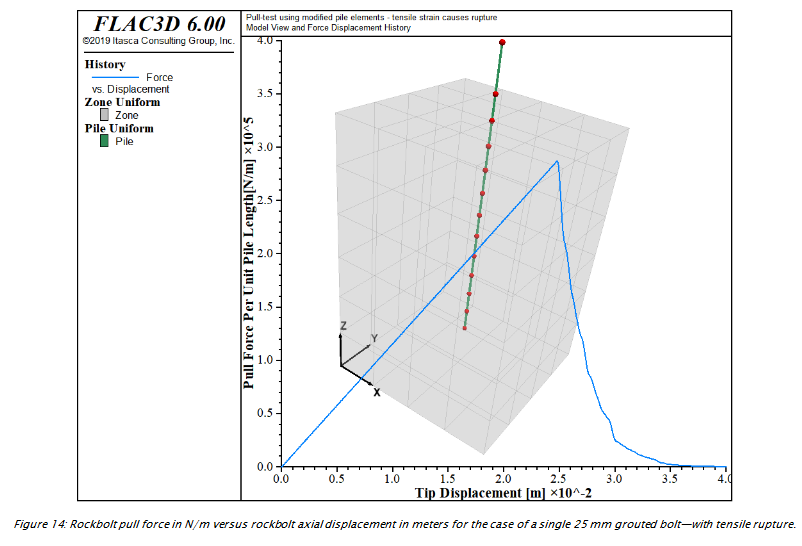

3 Pull-Tests

3.1 Problem Description
note: FISH function force is used to sum the reaction forces and monitor nodal displacement generated by the pull-test
note: free length of bolt that extends out of block + larger diameter
Perfectly plastic behavior of grout = max cohesion is exceeded
+post-peak weakening of shear bond strength
note: bond strength softening of the grout is defined with keyword
coupling-cohesion-table (see Rockbolt Behavior)
The relation btw shear disp. and cohesion weakening is prescribed thru
table cct. softening of friction of grout canbe defined using keyword
coupling-friction-table.
3.2 Zones
; ==================================================================
; Simulation of pull-test for grouted reinforcement
; using modified pile elements - Softening of cohesion
; ==================================================================
model new
fish automatic-create off
model title 'Pull-test using modified pile elements - cohesion softening'
; Create a single rock block and set its material properties.
zone create brick size 4 4 6 point 1 (0.4,0,0) point 2 (0,0.4,0) ...
point 3 (0,0,0.6)3.3 Properties
zone cmodel assign elastic
zone property bulk 5e9 shear 3e9
zone face apply velocity-normal 0.0 range position-z 0.6
; Create a pile element and assign properties
struct pile create by-line (0.2,0.2,0.1) (0.2,0.2,0.7) segments 12
struct pile property rockbolt-flag on
struct pile property young 200e9 poisson 0.25 cross-sectional-area 5e-4 ...
perimeter 0.08
struct pile property tensile-yield 2.25e5 ; ultimate tensile strength
struct pile property moi-y 2.0e-8 moi-z 2.0e-8 moi-polar 4.0e-8 ; 0.25*pi*r^4
struct pile property coupling-cohesion-shear 1.75e5 ...
coupling-stiffness-shear 1.12e7
struct pile property coupling-cohesion-normal 1.75e5 ...
coupling-stiffness-normal 1.12e7
; rel btw shear displ and coh weakening is prescribed thru table cct
struct pile property coupling-cohesion-table 'cct'
; change in cohesion with relative shear displacement
table 'cct' add (0,1.75e5) (0.025,1.75e4)3.4 Initial Equilibrium
struct node fix velocity-x range position-z 0.7
struct node initialize velocity-x 1e-6 local range position-z 0.7
call 'pileforce' suppress ; FISH function calculates reaction force on zones3.5 Alterations
; Set up histories for monitoring model behavior
history interval 10
fish history name 'force' @force
struct node history name 'disp' displacement-z position (0.2,0.2,0.7)
; Achieve a total displacement of 4.0 cm
model cycle 40000
;
model save 'pull-5'3.6 Some other notes
2.3. pull test with confinement “Pulltest06.f3dat” +modified pile logic.(see Behavior of Shear Coupling Springs) linear law is implemented.whereby reinforcement shear strength is defined as constant
Confining stress of 4 MN/m2 = 4MPa
As described in Behavior of Shear Coupling Springs a linear law is implemented in the modified pile logic, whereby the reinforcement shear strength is defined as a constant (coupling-cohesion-shear) plus the effective pressure on the reinforcement multiplied by the reinforcement perimeter (perimeter) times a friction angle (coupling-friction-shear). This pressure dependence is activated automatically in FLAC3D by issuing the reinforcement properties (perimeter) and (coupling-friction-shear).
(coupling-cohesion-shear)+ effective pressureperimeterfric
angle(coupling-friction-shear)
This pressure dependence is activated automatically by issuing
reinforcement properties(perimeter) and
2.5. pull test with tensile rupture “Pulltest08.f3dat” note: tensile-yield, tensile-failure-strain: for limiting axial yield force and limiting axial strain for rockbolt